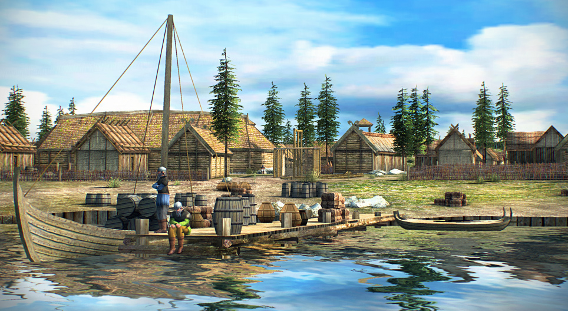
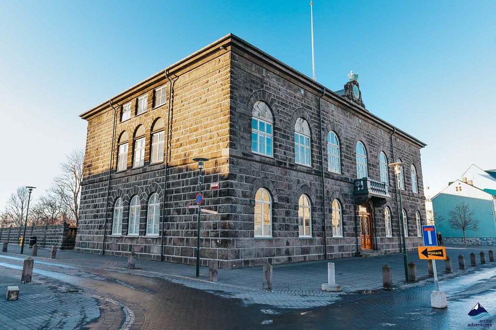
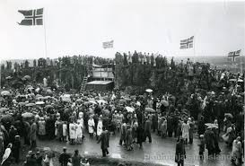

History

Viking Settlement
Iceland was first settled by Norse Vikings in the 9th century. The island's isolation helped preserve their culture and language.

Althing - World's Oldest Parliament
Established in 930 AD, the Althing is one of the world’s oldest surviving parliaments and symbolizes Iceland’s long democratic tradition.
Danish Rule
From the late 14th century until 1944, Iceland was under Danish rule. The country gained full independence during World War II.

Independence in 1944
Iceland officially became a republic on June 17, 1944. The day is now celebrated annually as the Icelandic National Day.